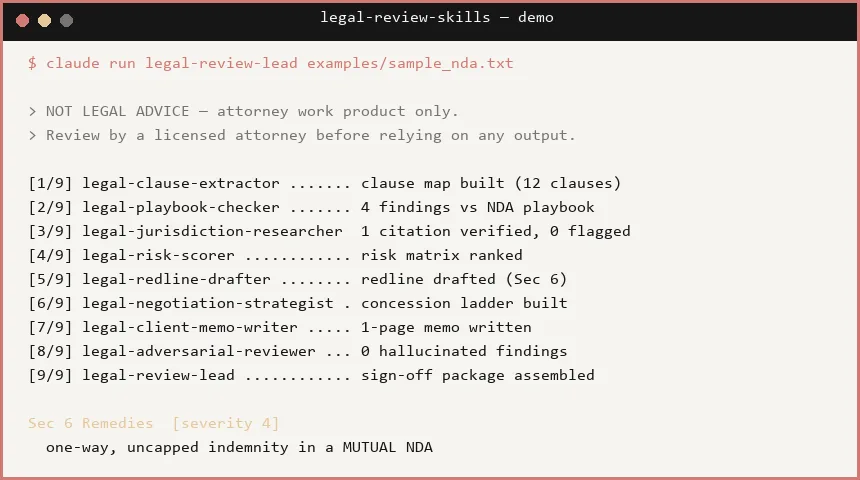
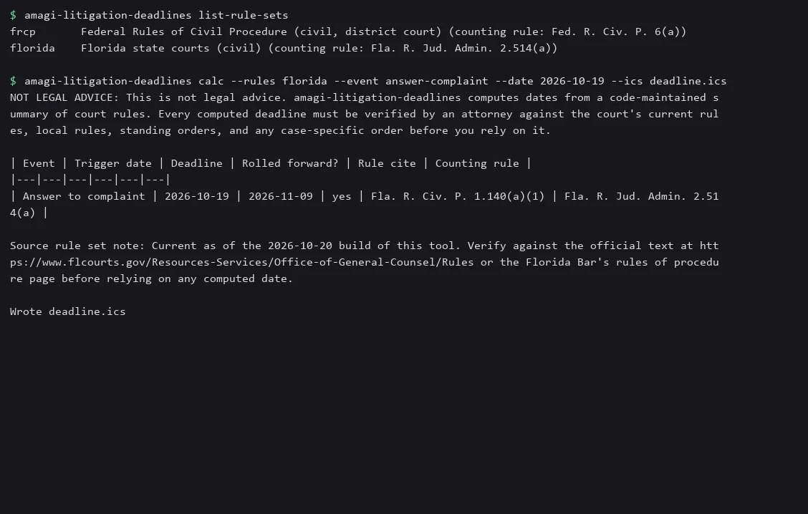

Real builds. No hype.
Sixteen open-source command-line tools and Claude skills for small businesses, law firms and developers. Each one is MIT licensed and installs with a single pipx line.
Sixteen tools, one install line each.

Law firm work
amagi-contract-deadlines
Point it at a folder of contracts and leases. Get every renewal, notice-window, expiry and option date, with the clause it came from, as an .ics calendar and a CSV.
amagi-federal-compliance-matrix
Turn a federal RFP or solicitation PDF into a compliance matrix (XLSX + markdown) with a blank response column, and carry your answers forward when an amendment drops.
amagi-legal-review-skills
A Claude Code skills and subagents pack for first-pass review of NDAs, MSAs, SaaS agreements, contractor agreements, and commercial or residential leases.
amagi-litigation-deadlines
Compute litigation response deadlines from a trigger event and date, with citations for every rule.
Back office
amagi-crm
Self-hosted CRM starter for small firms: contacts, deal pipeline, tasks, booking, with field-level encryption and a tamper-evident audit log.
amagi-receipts-to-csv
Turn a folder of receipt photos and PDFs into a clean CSV (date, vendor, subtotal, tax, total, category) with local OCR. QuickBooks Online bank-import preset. No cloud upload.
Video, audio and notes for Claude
amagi-listen
Let Claude hear a podcast or meeting recording: a chaptered, timestamped transcript from any local file or URL.
amagi-screen
Let Claude watch you reproduce a bug: key frames, on-screen text, and a timeline from any screen recording.
amagi-vaultgraph
Turn an Obsidian vault or Claude Code memory folder into one shareable 3D graph HTML file, with an orphan report and link suggestions. Names only, never note text.
amagi-watch
Runs locally, no API key. Give Claude a video URL and get back a timestamped transcript and key frames, merged into one markdown file.
Checks before you ship
amagi-env-check
Diff .env, .env.example and your live Vercel, Railway or Fly environment. Reports missing, extra, empty and duplicate keys without ever printing a value.
amagi-mcp-probe
Headless smoke test for MCP servers: starts the server, checks every tool schema, calls every tool with generated arguments, and fails CI on crashes, hangs and schema violations.
amagi-name-check
Check a project name against PyPI, npm, crates.io, Homebrew, GitHub and common domains in one command, with near-collision warnings.
amagi-site-diff
Two base URLs in, one markdown report out: crawl both sites, screenshot every matching page with Playwright, and write pixel-diff images plus text diffs an AI agent can read.
amagi-skill-lint
Lint Claude Code SKILL.md and subagent files: frontmatter, description triggers, token size, broken file references, and overlapping descriptions that make the wrong skill fire.
amagi-staleref
Find stale references in CLAUDE.md, AGENTS.md, .cursorrules and READMEs: file paths, npm/make/just/task scripts, python -m modules and env vars that no longer exist in the repo.
Find a tool for the job
Type the job you have. The closest tools show up below.

amagi-litigation-deadlines
Compute litigation response deadlines from a trigger event and date, with citations for every rule.
amagi-contract-deadlines
Point it at a folder of contracts and leases. Get every renewal, notice-window, expiry and option date, with the clause it came from, as an .ics calendar and a CSV.
amagi-legal-review-skills
A Claude Code skills and subagents pack for first-pass review of NDAs, MSAs, SaaS agreements, contractor agreements, and commercial or residential leases.
About AmagiLabs
- License MIT, on every repo
- Since October 2026
- Write to dev@amagisolutionsgroup.com
AmagiLabs is the open-source lab of Amagisolutionsgroup, Inc. We make small tools for the paperwork small firms run on.
The tools cover lease and contract deadlines, receipts for the books, federal RFP matrices, court deadlines and the checks a developer runs before a deploy. They are Python command-line tools you install with pipx and run on your own machine. Every one also ships a Claude skill, so Claude Code can run the tool for you. To report a bug, open an issue on that tool's repo. For help setting one up, see amagilabs.ai.